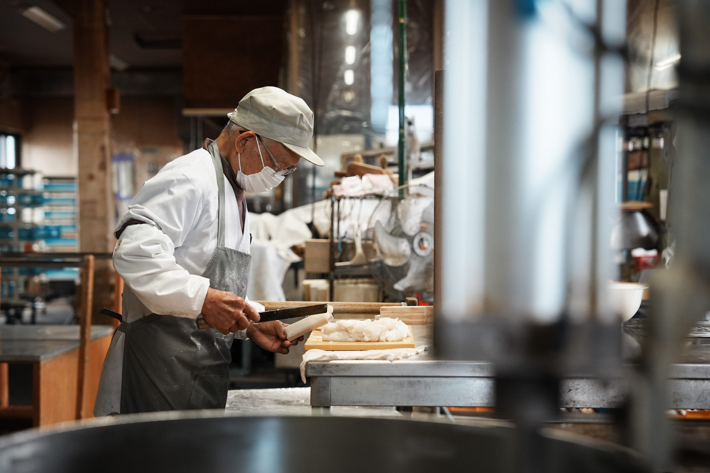
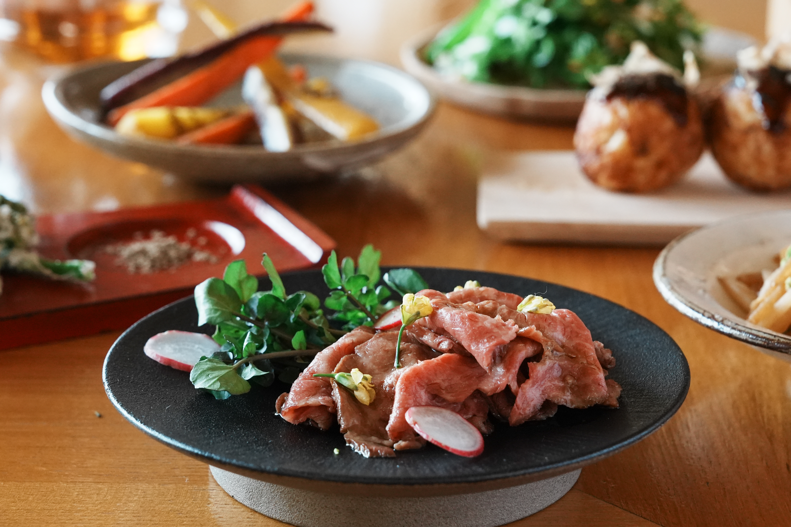
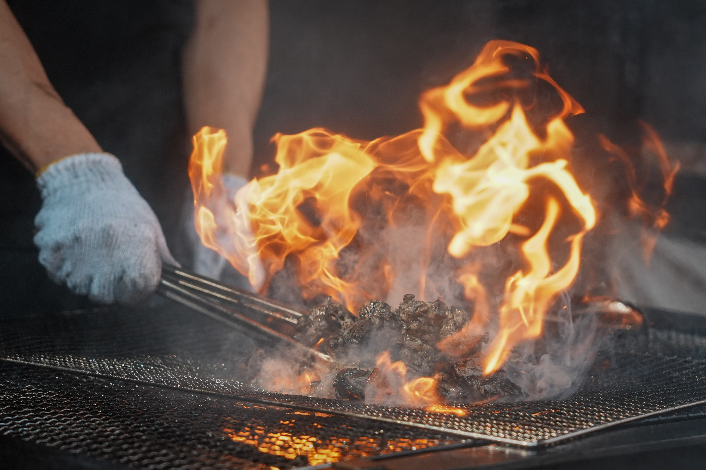

ヒビノネ写真館
Photographer
日々の何気ない一場面を、心に残る一枚として切り取る写真館。料理・人・空間に流れる時間と空気感を丁寧に記録します。地域の暮らしと食文化に寄り添い、その瞬間にしかない美しさを写し残します。
ABOUT US
OUR PROJECT

Photo by ヒビノネ写真館
私たちは毎月約1回、都城市の飲食店へお伺いし、
料理・人・空間、そのお店ならではの魅力を
写真と動画で記録しています。
この活動は、私たちにとっては撮影や表現のスキル向上、
そして地域とのつながりを深める機会になります。
また、お店の方にはSNSやホームページなどで活用できる
写真や動画素材をお渡しし、
お店の魅力発信に役立てていただきたいと考えています。
「私たち」「お店」「地域」
そのすべてが少しずつ幸せになれる、
そんな三方よしのプロジェクトを目指しています。
WHAT WE DO

Photo by ヒビノネ写真館
NOTICE

Photo by ヒビノネ写真館
「せっかくランチに行くなら、みんなが幸せになれる形を。」
私たちは、お店・地域・私たちの三方よしにつながる活動を目指しています。